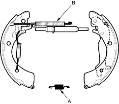
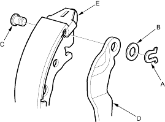

Frequent inhalation of brake pad dust, regardless of material composition, could be hazardous to your health.
|
 CAUTION
CAUTIONNOTE:
- Contaminated brake linings or drums reduce stopping ability.
- Block the front wheels before jacking up the rear of the vehicle.
Removal/Disassembly (4-door)
- Remove the brake drum (see page 18-24).
- Remove the tension pins (A) by pushing each retainer spring (B) and turning the pins.

- Remove the lower return spring (A) and remove the shoe assembly over the hub.

- Remove the upper return spring (B) and disassemble the brake shoe assembly.
- Disconnect the parking brake cable from the parking brake lever and remove the brake shoe.
- Remove the U-clip (A), wave washer (B) and pivot pin (C) and separate the parking brake lever (D) from the brake shoe (E).
